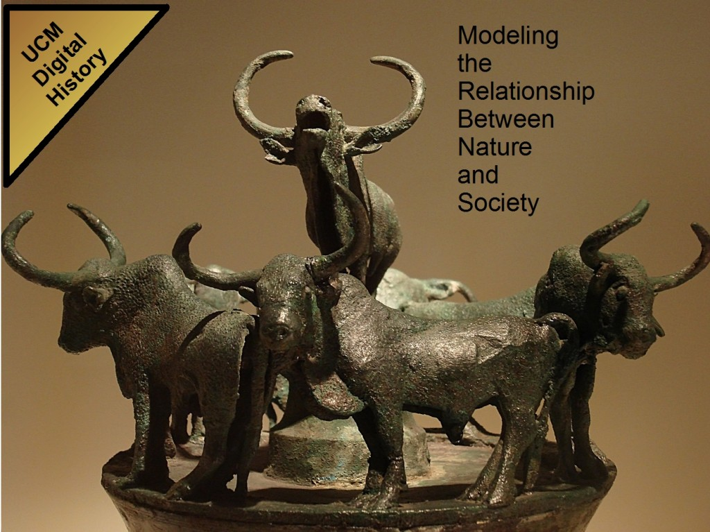

Tomorrow morning I’ll be giving a presentation on digital history as part of the big commencement celebration coinciding with the visit by first lady Michelle Obama. Along with giving me an opportunity to talk about the importance of using digital tools in the study of the humanities and integrating environmental systems into historical systems, it gives me the chance to show off some majestic cattle.

UC Merced students often complain about the cows, which is a shame, given the respect our ancestors gave to the animals.
This entry was posted on Friday, May 15th, 2009 at 5:05 PM and is filed under Academia, Digital Innovation, Events. You can follow any responses to this entry through the RSS 2.0 feed. Both comments and pings are currently closed.